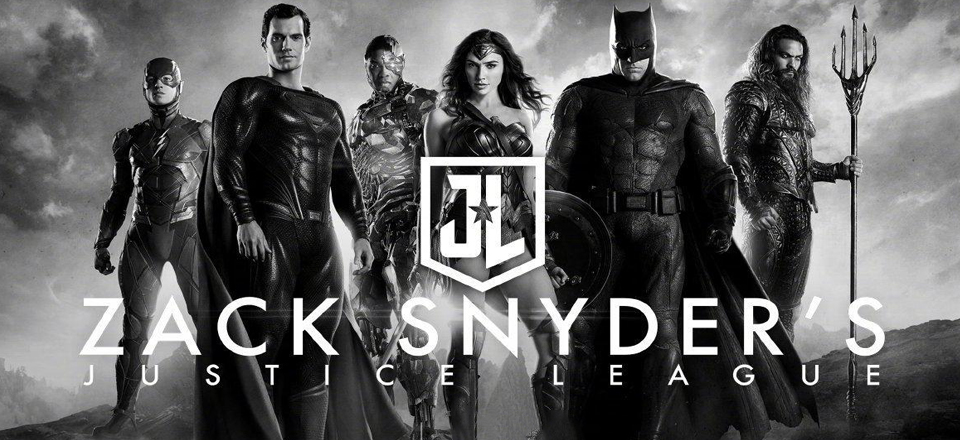
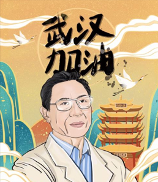
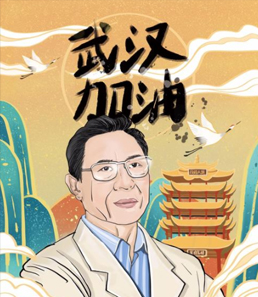

电影时间首页 | 登录 | 注册 | 收藏




片长:95分钟
类型:纪录片
定价:￥20
2020年初，新冠肺炎疫情暴发，1月23日，武汉关闭离汉通道。900万武汉人与来自全国各地医疗系统及其他行业的一线人员，一起打响武汉抗击新冠肺炎疫情阻击战！《武汉日夜》内容来源于从疫情开始，武汉当地三十多名摄影师在抗疫一线持续拍摄数月，多达数千小时的素材之中。影片以医院重症监护室医护人员及病患为主线，以深夜运送孕妇的志愿者为辅线，展现与疫情抗争、与死神决斗的动人故事。他们的生活，平凡……


最新电影
热门电影介绍

武汉日夜 高清视频在线观看 黑马网
上映时间:2021年01月22日
导演:曹金玲 发行公司:安乐影片
片长:95分钟
类型:纪录片
定价:￥20
2020年初，新冠肺炎疫情暴发，1月23日，武汉关闭离汉通道。900万武汉人与来自全国各地医疗系统及其他行业的一线人员，一起打响武汉抗击新冠肺炎疫情阻击战！《武汉日夜》内容来源于从疫情开始，武汉当地三十多名摄影师在抗疫一线持续拍摄数月，多达数千小时的素材之中。影片以医院重症监护室医护人员及病患为主线，以深夜运送孕妇的志愿者为辅线，展现与疫情抗争、与死神决斗的动人故事。他们的生活，平凡……
影迷无敌 2020-1-2 15:38:37
请剧情党们不要太较真电影对魔兽历史的更改，毕竟翻拍的电影，多少会有些出入，我们看的是情怀，哈哈。。。
来自:大众点评网友
时光不老 2020-1-2 15:38:37
个人认为小时代毫无看点，看了不到半小时就要睡着了，我已无力吐槽，建议大家还是去读原著吧！！！
来自:星光影院网友
cocoke 2020-1-2 15:38:37
星爷的每一部电影都很经典，重复地看过很多遍，每次都有更深刻的理解和更深的感悟，同样期待《美人鱼》。
来自:美团网网友
公司简介 | 关于我们 | 联系我们 | 友情链接 | 招聘信息 | 产品答疑
免责声明: 本网站内容收集于互联网，电影时光网不承担任何由于内容的合法性及健康性所引起的争议和法律责任。
欢迎大家对网站内容侵犯版权等不合法和不健康行为进行监督和举报。